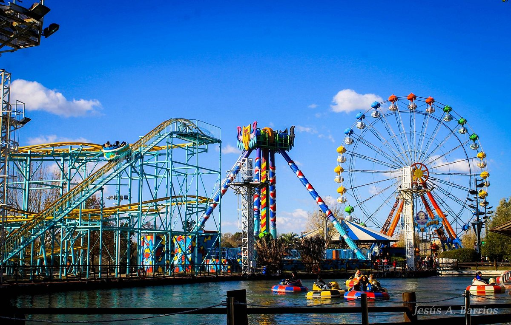

TuTurismo Argentina
Diversos Destinos
Mar del Plata
Bariloche

Ushuaia

Ciudad de Cordoba

La Plata

San Miguel de Tucumán
Actividades Recomendadas
Cataratas del Iguazú

El Chaltén
Temaiken

Glaciar Perito Moreno
Planetario Galileo Galilei

Parque de la Costa
Atracciones para Visitar
Teatro Colón
Termas de la Federación

Museo de Arte
Consejos de Viaje
Consejos Generales
Lleva contigo siempre una botella de agua reutilizable.
Investiga sobre la cultura y costumbres locales antes de viajar.
No te olvides de llevar tu documentación y seguro de viaje.
Consejos de Seguridad
Mantén tus pertenencias seguras y no lleves objetos de valor innecesarios.
Evita caminar solo por zonas poco iluminadas o desconocidas por la noche.
Utiliza cajeros automáticos seguros y evita mostrar grandes cantidades de efectivo en público.